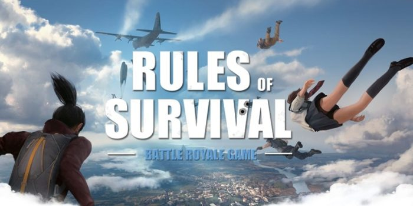
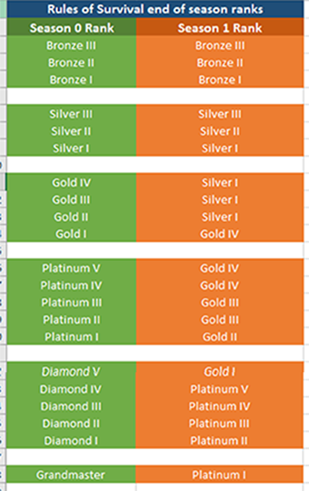
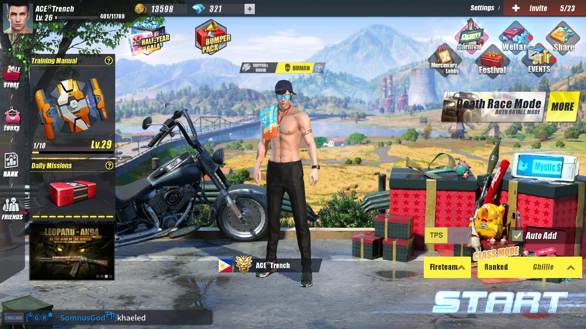
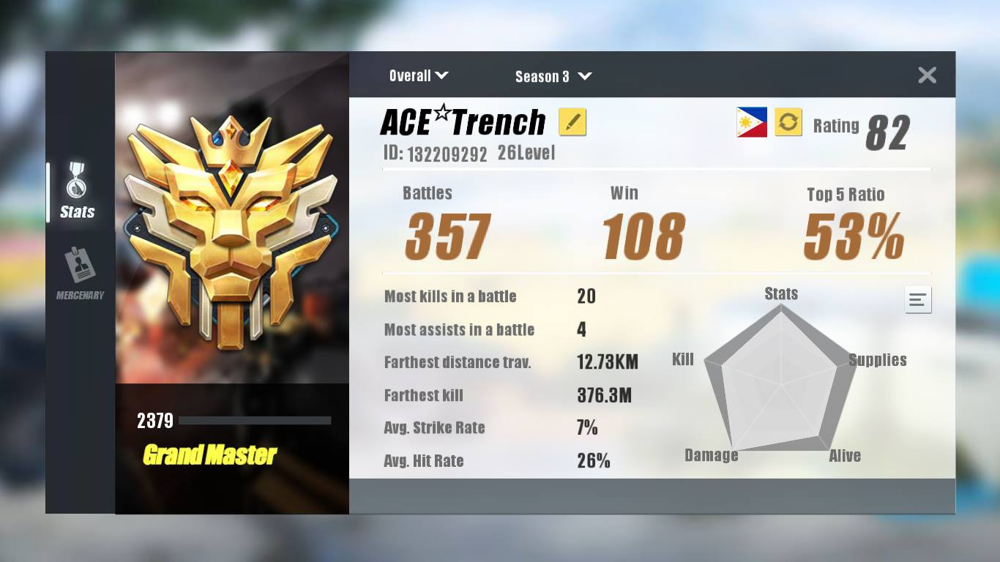
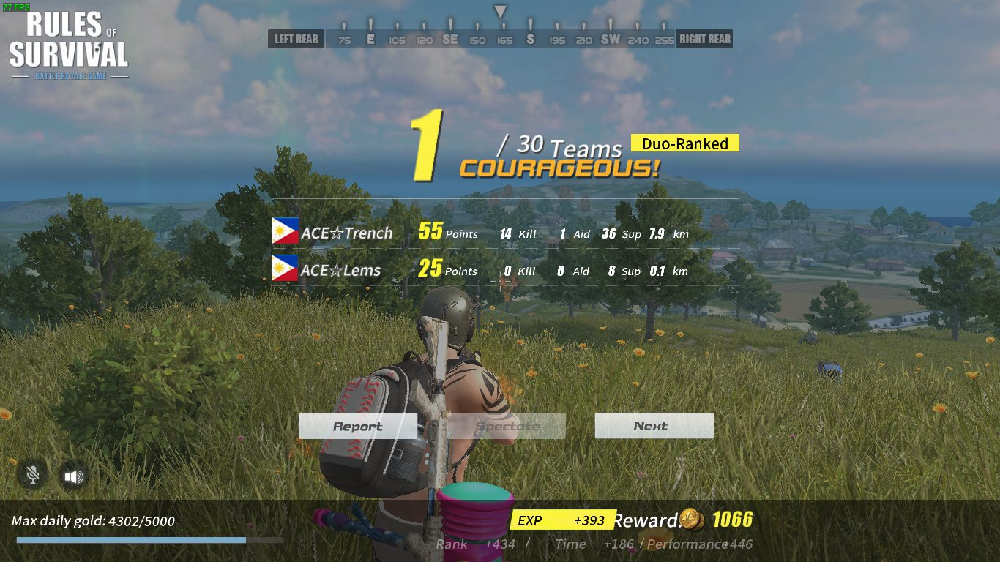
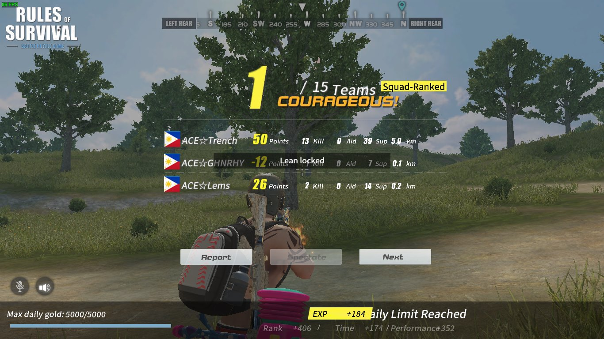
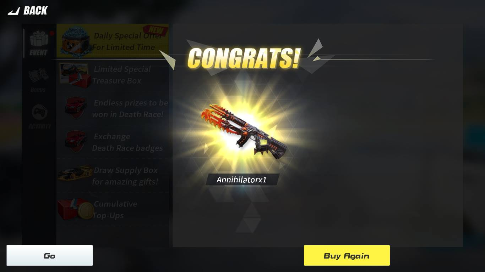
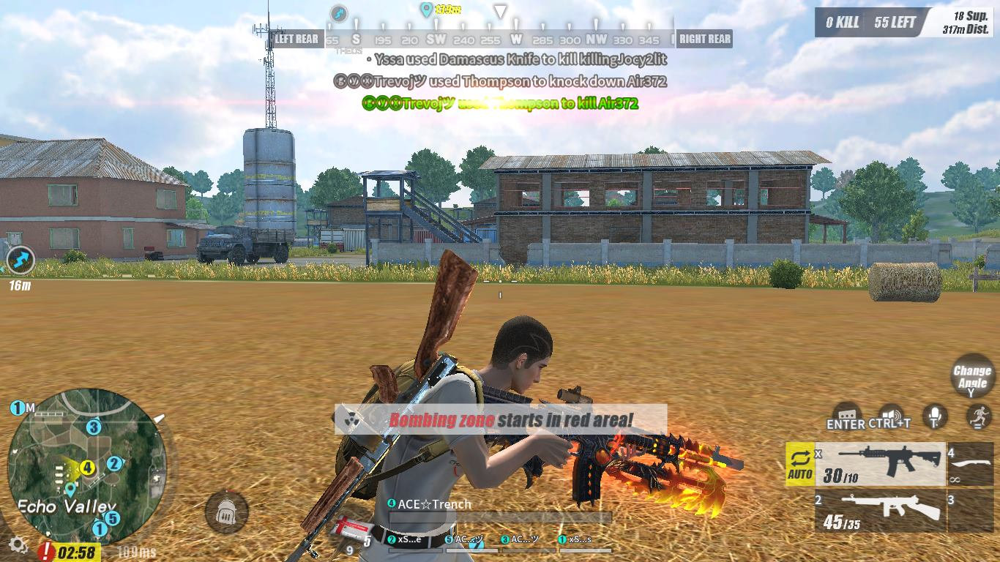

Rules Of Survival

GAME PLAY
Rules of Survival follows the standard form of the battle royale genre, where players fight to be the last person (or team) alive. Players can choose to enter the match in different modes: Solo, Duo, Squad (four players), or a Fireteam (five players). In either case, the last person or team left alive wins the match. There are two playable maps in the game: Ghillie Island (120 players, 4.8km×4.8km) and Fearless Fiord (300 players, 8km×8km). There are also different game modes such as the Gold Mode, in which the player can earn gold, or the Diamond Mode in which players may earn diamonds throughout the match. The introduction of the Fearless Fiord game map introduces a new type of match, the Blitzkrieg, in which players will land only on a certain part of the map equipped with a pistol, a backpack and basic armor. Blitzkrieg is meant to make players clash head-on.
The round starts with all players contained in one location on an island. When the countdown finishes, players will parachute from a plane onto an island, with procedurally distributed items such as weapons, armors and medical kits available to be looted, and vehicles to be ridden. Players can also loot killed players for their gear. In third-person mode, players can switch between third-person and first-person perspective. The game also offers first-person mode which forces players into first-person perspective. As the game time progresses, the game's safe zone will gradually reduce in size, where players caught outside the zone will take damage. This increases the chance of encounter, and thus confrontation between players. Random supply drops will also occur during match, providing random items which may otherwise not be able to be found during normal gameplay.
At the completion of each round, players will receive in-game currencies based on survival length, number of players killed by the player and the players level. The currencies can then be used to purchase supply box containing cosmetic items for character or weapon customization.
I love to play battle royal games but im so sad that this game is really fast to bypass by a cheater and the game looks a deadgame because of some player using free cheats and the gameplay affects other player.
ACHIVEMENTS
I play this game from beta test to open beta and i end to play this like season 4 and there is so many ways to play this game and it looks fun to play this and me and my friends grinding a rank to achieve the last rank of the game. And sometimes there is a barrier to achieve the last rank because lots of cheaters in a match but still playable and enjoyable.
Here i will show you some of my screenshots of wins and chicken dinners lets go!
First the rank system:
My highest rank i achieve:
 Some of my Chicken Dinners:
 Also i want to share my first ever 1 tap lucky spin
 I join a tournament but unlucky we did not win because it was our first time to compite at this game but its okay atleast we have so much memory in this great game! And im so sad that there is the news it will close next year or just a fake news but if you want to try this go its free to play my friend just click the link below.